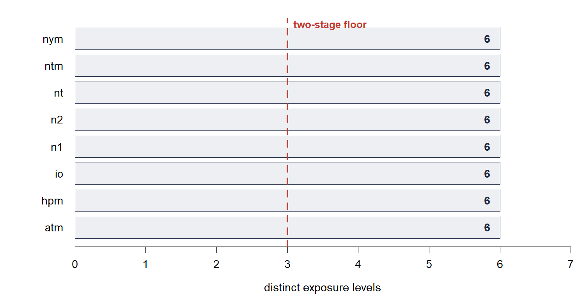

Install, lay the data out, and ask whether a dose-response is possible at all
# install.packages("remotes") remotes::install_github("vanioljantunes/easyDR")
Needs only base R (≥ 4.1).
install.packages("dosresmeta")
In Suggests, not
Imports, because the two functions here never call it.
| study | dose | cases | n |
|---|---|---|---|
| Allen 2011 | 0 | 12 | 200 |
| Allen 2011 | 5 | 19 | 190 |
| Allen 2011 | 15 | 28 | 185 |
| Allen 2011 | 30 | 41 | 180 |
| Brown 2014 | 0 | 8 | 200 |
| Brown 2014 | 5 | 14 | 190 |
The shaded rows are each study's reference category, conventionally its lowest dose.
studyStudy label. Rows sharing a label are one study.
doseThe exposure for that category, in a unit shared across studies.
casesEvents in the category.
nThe denominator: group size, or person-time for rate data.
Two-stage methods need at least three exposure levels per study. A study with two points carries no information about curvature, and its within-study covariance cannot be reconstructed (Greenland and Longnecker, 1992). That is the floor, and three is the default.
dr_viability(good)
dr_viability(bad)

One-stage methods keep studies with two exposure levels, and that is precisely their selling point (Crippa et al., 2019). Lowering the floor shows what a one-stage model would have to work with:
dr_viability(bad, min_levels = 2)
The missing count is still reported, because no choice of model recovers it.